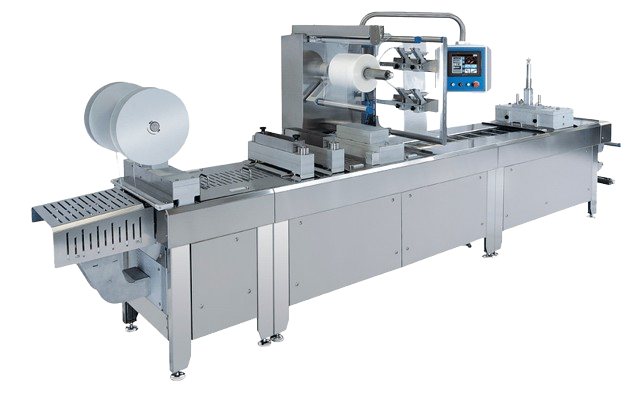
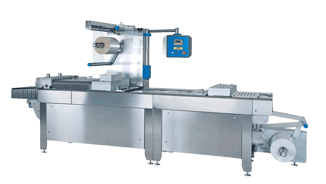

Vaakumrada-pakkimisliin
Tööstusele
ILPRA FORMPACK F1
ILPRA Formpack F1 mudel on in-line radapakkimisliin, mis on täielikult valmistatud roostevabast terasest ja anodiseeritud alumiiniumist. Innovaatiline disain ja kõrge ohutusklass IP65 tagavad probleemideta töö märjas keskkonnas. F1 sobib keskmise tootlikkusega pakendusprotsessi. Kõrge töökindlus ja madalad kasutuskulud tagavad tootmise efektiivsuse.

Masina omadused:
Võimalik töötada pehme ja jäiga pakendiga.
Palju lisaseadmeid ja versioone.
Ülikiire vormivahetus ilma poltideta.
Suur puutetundlik eestikeelne juhtpaneel kõikide töösõlmede visualiseeritud juhtimisega ekraanilt.
Harjadeta mootor tagab täpsuse ja suure kiiruse
Rohkem infot: ILPRA FORMPACK F1
ILPRA FORMPACK F0
ILPRA Formpack F0 mudel on in-line radapakkimisliin, mis on täielikult valmistatud roostevabast terasest ja anodiseeritud alumiiniumist. Innovaatiline disain ja kõrge ohutusklass IP65 tagavad probleemideta töö märjas keskkonnas. F0 sobib keskmise tootlikkusega pakendusprotsessi. Kõrge töökindlus ja madalad kasutuskulud tagavad tootmise efektiivsuse.

Masina omadused:
Võimalik töötada pehme ja jäiga pakendiga.
Palju lisaseadmeid ja versioone.
Ülikiire vormivahetus ilma poltideta.
Harjadeta mootor tagab täpsuse ja suure kiiruse
Rohkem infot: ILPRA FORMPACK F1